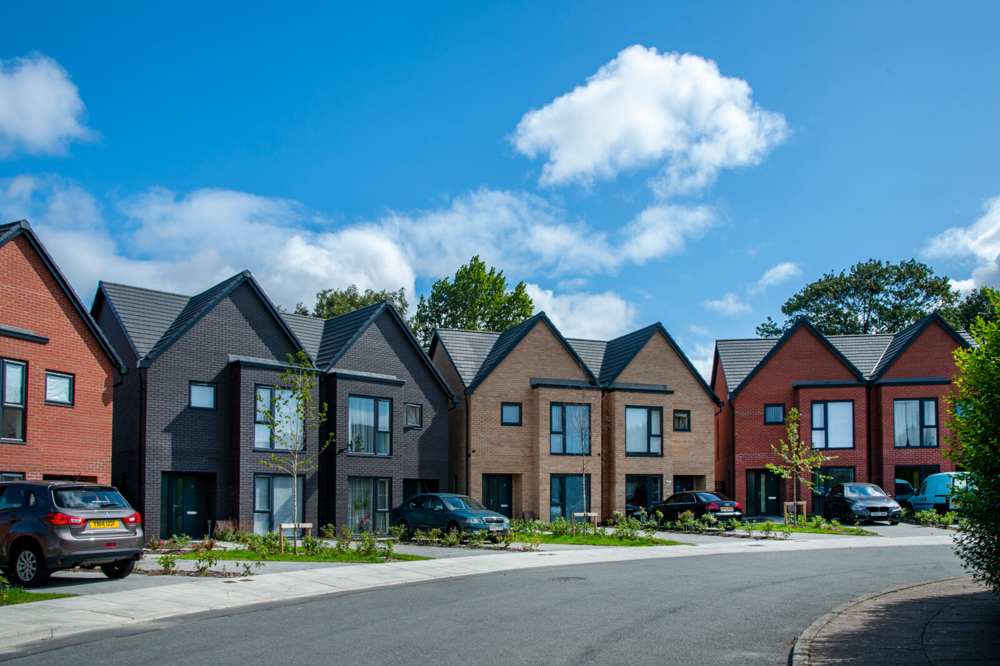

Knight Frank Challenge Week

Geospatial Challenge Week: Identifying Housing & Redevelopment Opportunities Link to heading
Project Overview Link to heading
This intensive, week-long project, running from Monday, March 31, 2025, to Friday, April 4, 2025, brought together a dynamic team of 20 PhD students. We collaborated to address significant geospatial challenges presented by Knight Frank, one of the world’s leading independent real estate consultancies. The core context of the project was the UK government’s ambitious target to build 1.5 million new homes by 2029, highlighting the critical need for innovative approaches to identify suitable land for development and make evidence-based decisions on housing needs.
The project was structured around two primary challenges:
- Housing Submarkets Classification: To develop a comprehensive and applicable methodology for classifying housing submarkets across England and Wales. This involved analysing diverse datasets to understand housing characteristics, density, and market trends.
- Grey Belt Identification: To create a framework for identifying “Grey Belt” land – defined as poor quality, previously developed, and underutilised land within the Green Belt that holds potential for redevelopment.
My Role and Contributions Link to heading
I had the opportunity to contribute to the project in several capacities across its different phases:
-
Project Infrastructure & Planning (Day 1):
- Drawing on my experience with cloud systems, I was part of the initial project management team responsible for establishing our operational framework.
- My key tasks included setting up the Google Workspace for the 20 team members, creating individual email accounts, and establishing a large, centralised cloud repository on Google Drive to ensure efficient data management and collaboration.
- Additionally, I authored the comprehensive Project Plan, which detailed the project’s objectives, methodologies, deliverables, team structure, and timelines.
-
Technical Development – Semantic Segmentation for Grey Belt Land (Days 2-3):
- My focus then shifted to a technical role within Challenge 2 (Grey Belt Identification).
- I designed and built a sample semantic segmentation pipeline using GEOSAM (Geospatial Segment Anything Model).
- This pipeline was developed to process satellite imagery for segmenting and labelling land use parcels, aiming for a granular identification of features indicative of Grey Belt land (e.g., concrete hard standings, work yards), thereby supporting its more accurate delineation.
-
Final Presentation Orchestration (Days 4-5):
- During the final two days, I took on the responsibility of orchestrating the project’s final presentation.
- This involved gathering and synthesising the findings from both challenge teams, structuring the narrative, and ensuring a cohesive and impactful delivery of our week’s work using Reveal.js.
Summary of Project Findings & Methodologies Link to heading
The project aimed to deliver innovative solutions and methodologies to Knight Frank within the compressed timeframe:
-
Housing Submarkets Classification Findings:
- The team proposed a methodology to classify housing submarkets by integrating diverse data sources. These included Valuation Office Agency data, Energy Performance Certificates (EPCs), remote sensing imagery (like SPOT and Pléiades), demographic data from the 2021 Census, OS Points of Interest, and housing market trends[cite: 10, 13, 14, 17, 18].
- The goal was to create a detailed classification system that could define and map distinct housing submarkets[cite: 26], thereby providing stakeholders with clearer insights for decision-making[cite: 15].
-
Grey Belt Identification Findings:
- A framework was developed for identifying Grey Belt land [cite: 25] by analysing Green Belt boundaries, local planning policies, and using satellite imagery (SPOT and Pléiades) to detect previously developed land features[cite: 20].
- My work on the GEOSAM pipeline contributed to the technical capability to perform granular land use segmentation from this satellite data.
- The project further aimed to integrate these identified sites with data on transport accessibility, infrastructure, and Land Registry information to assess their development potential and create decision-support metrics for planners[cite: 20, 21].
This collaborative project successfully demonstrated the application of advanced geospatial analytics, machine learning (via GEOSAM), and cloud computing to address complex challenges in the real estate sector, providing Knight Frank with novel approaches to understanding housing markets and identifying development opportunities.
Final Presentation Link to heading
The comprehensive findings and methodologies developed during the challenge week were presented to Knight Frank. The Reveal.js presentation can be accessed here: Knight Frank Challenge Week Presentation